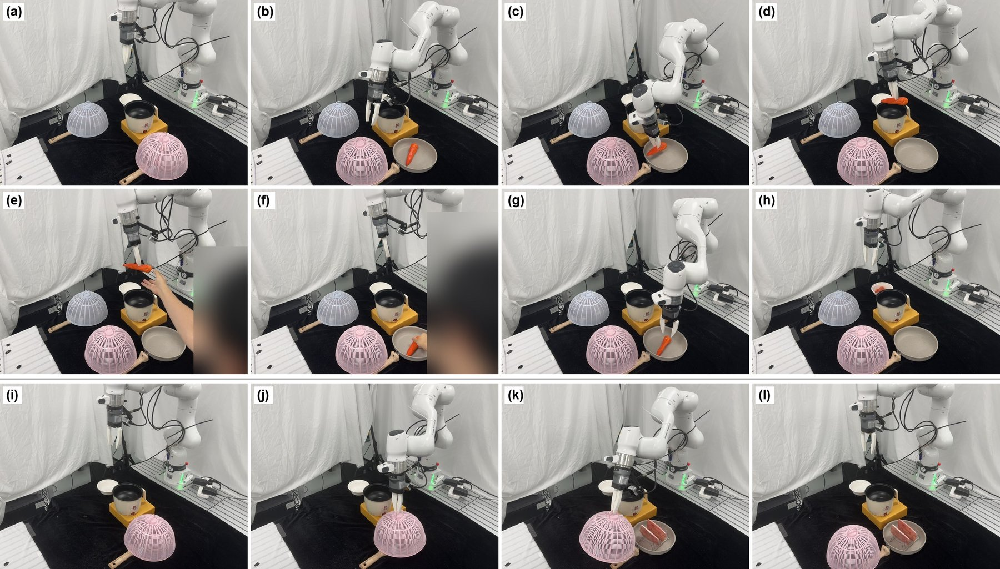

The same request can call
for a different plan.
Memory must persist and remain revisable.
A harness around a frozen VLA
A Dual-Loop Harness for Personalized and Reliable Robot Assistance
Remember the person and the scene. Check actions before contact. Recover from failures and retain what works.
Correct dispatches with either text or image references.
RoboLab · planning context ↗Runtime shielding reduces violations beyond safe demonstrations.
LIBERO-Safety · proactive shield↗VLA alone → two reflection rounds; cumulative over 200 episodes.
LIBERO-Object · reactive recovery↗01 / Motivation
Everyday assistance requires choosing the right task for the user and carrying it out reliably as the world changes.
Memory must persist and remain revisable.
Protect before contact. Recover after failure.
02 / Method
Planning selects the task; execution protects and repairs it. Visual feedback connects both around a frozen VLA.
03 / Personalization
Remember preferences, locate personal objects, and revise both the plan and memory when new evidence arrives.
RoboLab / four scenes
After memory becomes stale
| Query | Memory corrected | Follow-up dispatch |
|---|---|---|
| Text | 76 / 88 | 83 / 88 |
| Image | 77 / 88 | 85 / 88 |
Update memory by recording the new location and removing the stale association.
On the real robot
04 / Proactive protection
Predict gripper and carried-object motion, check obstacle distances, then release actions or retreat.
LIBERO-Safety / 900 episodes per system
05 / Reactive recovery & reflection
Control-based skills restore task progress. Offline reflection refines their parameters and procedures for later attempts.
LIBERO-Object / 12 cm object displacement
LIBERO-Recovery / 770 recorded failure states
Inside the skill library
06 / Integrated assistance
“Please serve me lunch.” One request brings personalization, protection, and recovery together.

Physical feedback guides both how to continue and whether the task should continue.
CarryOn
Persistent context. Runtime protection. Recovery that improves with experience.